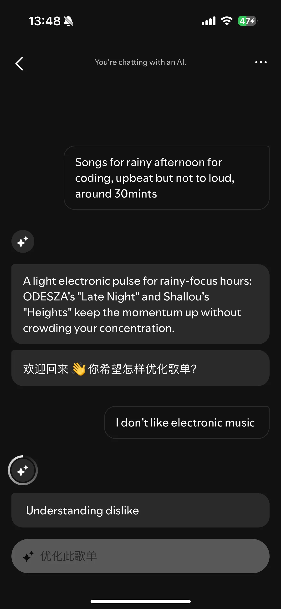
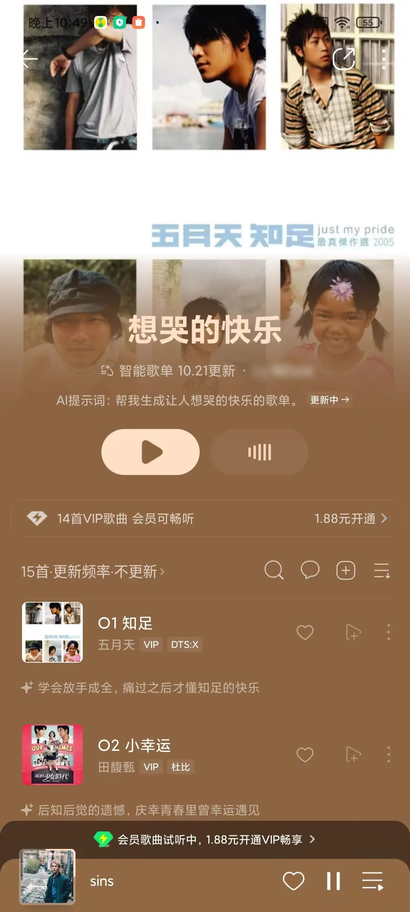
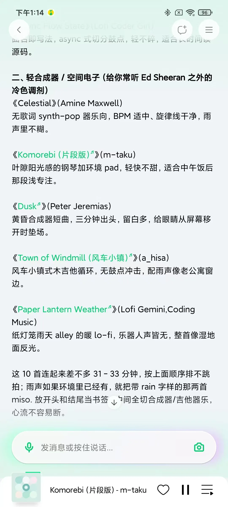

当音乐发现可以被 Prompt
Spotify Prompted Playlist 与 QQ 音乐智能歌单的产品研究：自然语言如何改变人们表达、修正和保留自己的音乐需求。
一个无法用曲风标签描述的需求。图中是另外两次测试：「让人想哭的快乐」与「雨天下午写代码」。



图 1两款产品的 AI 歌单与对话入口
观察｜个人账号实测截图，用户名已打码。三张图来自不同 Prompt，只用于呈现产品形态。
本文的三个发现
- 04.1AI 让难以描述的感受和难以操作的规则，都变成可以探索的需求。
- 04.2用户通过结果发现偏好，AI 通过反馈理解需求，修正是双向的。
- 04.3AI 歌单没有单一终点。收藏几首歌就离开，也可能是一次成功。
探索中的双向意图修正
对于抽象、主观的音乐需求，用户未必能在第一次输入时说清偏好。AI 的价值不只在于生成结果，还在于帮助用户通过试听和反馈，逐步明确自己的方向。
用户输入
陌生城市的周日下午Spotify歌单简介
用户试听后优化
更明亮、乐观一点Spotify优化后简介
用户通过结果，发现自己想要的不是忧郁
AI通过反馈，获得更明确的方向
图 2同一个 Prompt，优化前后的简介与前三首
观察｜前后两次结果使用相同的裁切位置，中间是用户唯一的一次输入。比较范围｜同一 Prompt、同一会话，Spotify 单人实测。
这并不意味着第一次推荐失败。对于没有唯一正确答案的需求，初始结果本身就是用户识别和表达偏好的参照。
1两个测试账号的使用历史不同，这里只比较解释方式，不比较推荐质量。两款产品都为生成的歌单提供整体简介和逐首推荐理由。在本次体验中，Spotify 更常把 Prompt 转化为具体的声音和氛围；QQ 音乐在部分测试中更倾向于复述提示词，或围绕歌词展开1。歌单简介帮助用户校准方向，逐首理由帮助用户判断陌生歌曲。
Spotify对话优化 · 「雨天下午写代码」
QQ 音乐智能歌单 · 「让人想哭的快乐」
图 3同样是推荐理由，Spotify 写声音，QQ 音乐写歌词
观察｜Spotify 描述节奏如何服务场景；QQ 音乐的逐首理由围绕歌词和情绪展开。比较范围｜两张截图来自不同的 Prompt 和不同入口（对话优化、智能歌单）。这里只比较解释的写法，不比较推荐质量。
2补充观察：QQ 音乐元宝在部分事实检索任务中，文字回答能回应问题，但可播放歌曲未必与描述对应。来自辅助聊天入口，不作为 AI 歌单的性能比较。但理由写得动人，不代表推荐准确。解释用户需求、选择实际歌曲、说明推荐依据，这三件事应当相互一致2。
判断
好的 AI 音乐探索，是让用户看得懂推荐方向，能低成本地修正它，并通过试听验证这种理解。
待验证｜这种体验是否会提高陌生歌曲试听率、调整后满意度及持续使用意愿。